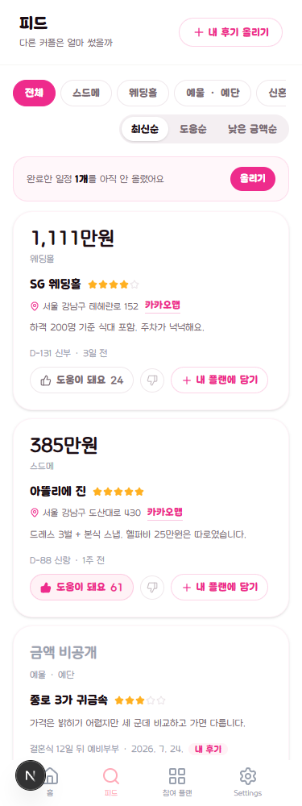

1,111만 원
웨딩홀
SG 웨딩홀★★★★☆
서울 강남구 테헤란로 152 카카오맵
하객 200명 기준 식대 포함. 주차가 넉넉해요.
D-131 신부 · 3일 전
C안 · 04
제목과 내 후기 올리기가 면으로 올라갑니다. 금액을 세로로 훑는 한 줄 카드 설계(시안 D)는 그대로 둡니다 — 이 화면에서 사람이 실제로 하는 일이 금액 비교라, 금액이 같은 x 좌표에 줄서야 합니다.

다른 커플은 얼마 썼을까
1,111만 원
웨딩홀
서울 강남구 테헤란로 152 카카오맵
하객 200명 기준 식대 포함. 주차가 넉넉해요.
D-131 신부 · 3일 전
385만 원
스드메
서울 강남구 도산대로 430 카카오맵
드레스 3벌 + 본식 스냅. 헬퍼비 25만원은 따로입니다.
D-88 신랑 · 1주 전
금액 비공개
예물 · 예단
가격은 밝히기 어렵지만 세 군데 비교하고 가면 다릅니다.
결혼식 12일 뒤 예비부부 · 2026. 7. 24.
지금은 후기마다 흰 카드 + 그림자 + 16px 여백이 붙어, 한 화면에 후기 두 개 반만 들어갑니다. 구분선으로 바꾸면 네 개가 보이고, 금액을 위아래로 훑기가 쉬워집니다.
지금은 목록 위 분홍 띠라 보러 온 후기가 한 화면 아래로 밀립니다. 면 안으로 넣으면 계속 상기시키면서도 목록을 밀지 않습니다 — 공급이 이 기능의 생사입니다.
알약 세 개를 글자로 낮춥니다. 카테고리 칩과 같은 모양이라 지금은 둘이 같은 층위로 보이는데, 카테고리는 무엇을, 정렬은 어떻게 라 성격이 다릅니다.
"도움이 안 돼요" 수는 화면에 내지 않습니다. 정직하게 올린 후기에
숫자가 박히면 다음 사람이 안 올립니다. 정렬과 어뷰징 감지에만 씁니다.
비공개 금액은 amount 필드 자체가 없습니다 —
?? 0 으로 채우면 "0원"으로 그려집니다.
장소 줄은 도로명 주소 한 줄 + 카카오맵 링크입니다. 카드마다 작은 지도를 붙이면 금액을 세로로 훑는 설계가 깨지고 staticmap 쿼터가 붙습니다.